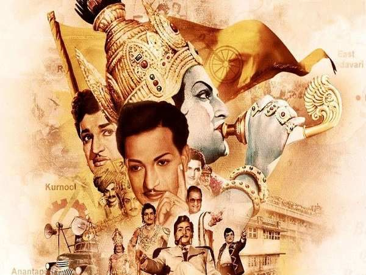
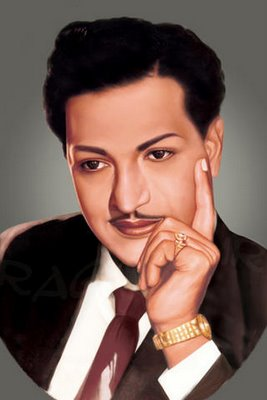
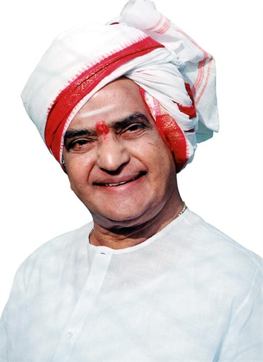
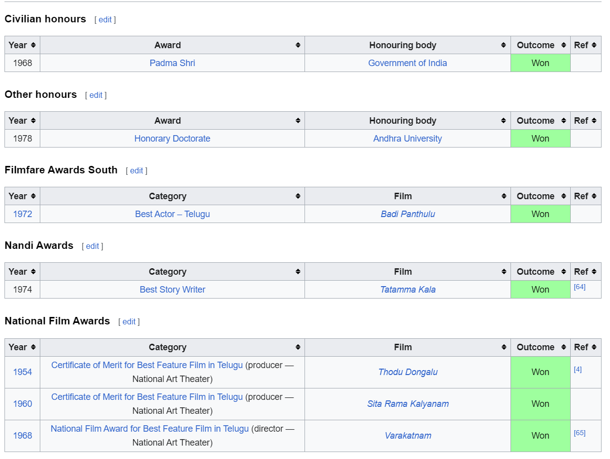

Nandamuri Taraka Rama Rao

Nandamuri Taraka Rama Rao was born in a Hindu agrarian family on 28 May 1923[1] in Nimmakuru, a small village in Gudivada taluk of
Krishna district, which was a part of the erstwhile Madras Presidency of British India. He was given in adoption to his paternal
uncle because his uncle and aunt were childless.[25] He was first educated by a teacher who came from a nearby village, whom he w
ould attribute his command of Telugu to, as well as his father, an aspiring thespian and patron of the arts.[26] Although childre
n were normally pulled out of school after completing their primary education, on account of being the first male child in the family,
his father sent him to Vijayawada, where he continued his education, matriculating in 1940 before studying at SRR & CVR College and
at the Andhra Christian College in Guntur.[27] In 1947, he joined the Madras Service Commission as a sub-registrar at Prathipadu of Guntur
district, a much-coveted job that he nevertheless quit within three weeks to devote himself to acting.[28] He developed a baritone singing
voice as a young man.[8]

Film Career
Nandamuri Taraka Rama Rao, popularly known as N.T. Rama Rao or simply NTR, was an Indian actor, director, and politician from the state of Andhra Pradesh. He had an illustrious career in the Telugu film industry, acting in over 300 films in a career spanning several decades.
NTR was known for his versatile acting skills and ability to play a wide range of characters. He was considered one of the most successful actors in Telugu cinema, and his performances in films such as "Pathala Bhairavi" and "Mayabazar" are considered classic. His portrayal of Lord Rama in "Lava Kusha" and Lord Krishna in "Sampoorna Ramayanam" are considered some of the greatest performances in Indian cinema.
NTR was also a gifted director, and his films such as "Sampoorna Ramayanam" and "Bhakta Prahlada" were highly successful. He was also an accomplished writer, and his contributions to Telugu literature are widely respected.
In addition to his acting, directing and writing skills, NTR was also known for his dedication to fitness and discipline, which served as an inspiration for many people.
A tribute to NTR's film career would likely focus on his outstanding acting skills, his versatility as an actor, his contributions as a director and writer, his dedication to fitness and discipline, and his impact on Telugu cinema. His legacy in the Telugu film industry continues to be remembered and respected by audiences and his influence on the Telugu culture and film industry is undeniable.

Political Career
As a politician, he founded the Telugu Desam Party (TDP) and served as the Chief Minister of Andhra Pradesh for three terms. During his political career, NTR was known for his dynamic and charismatic personality, which helped him connect with the common people. He was a strong advocate of the rights of the Telugu people and worked tirelessly to improve the lives of the people of Andhra Pradesh.
One of NTR's major contributions during his political tenure was the implementation of various welfare schemes such as providing financial assistance to farmers and the unemployed, and improving the education system. He was also known for his efforts to promote Telugu culture, language and literature.
NTR's political career was marked by many successes, including the establishment of the Telugu Desam Party and his three terms as Chief Minister of Andhra Pradesh. He played a key role in shaping the political landscape of Andhra Pradesh and left a lasting impact on the state.
NTR passed away in 1996, but his legacy continues to be remembered and respected in Andhra Pradesh. His contributions to the state's politics and welfare of its people will always be remembered.
A tribute to NTR's political life would likely focus on his dynamic and charismatic personality, his advocacy for the rights of the Telugu people, his contributions to the welfare of the people of Andhra Pradesh, and his impact on the state's political landscape.
Awards and Honours

For more information ntr_wiki